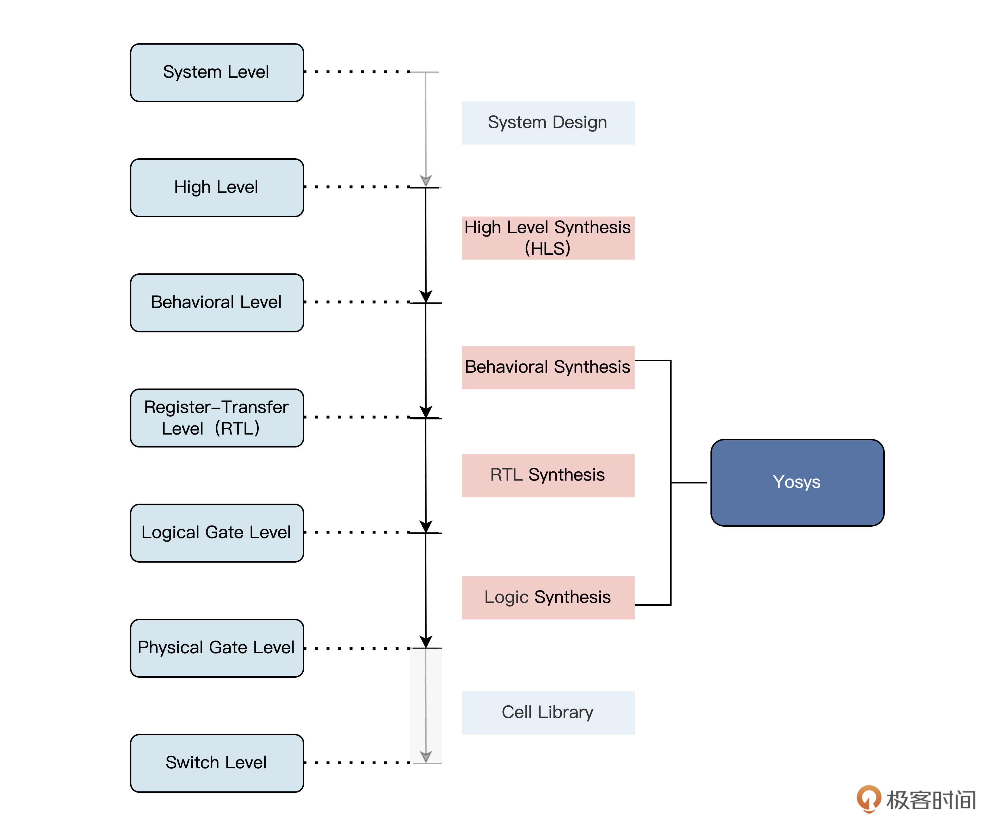

- 00 开篇词 练好基本功，优秀工程师成长第一步.md
- 01 CISC & RISC：从何而来，何至于此.md
- 02 RISC特性与发展：RISC-V凭什么成为“半导体行业的Linux”？.md
- 03 硬件语言筑基（一）：从硬件语言开启手写CPU之旅.md
- 04 硬件语言筑基（二）_ 代码是怎么生成具体电路的？.md
- 05 指令架构：RISC-V在CPU设计上到底有哪些优势？.md
- 06 手写CPU（一）：迷你CPU架构设计与取指令实现.md
- 07 手写CPU（二）：如何实现指令译码模块？.md
- 08 手写CPU（三）：如何实现指令执行模块？.md
- 09 手写CPU（四）：如何实现CPU流水线的访存阶段？.md
- 10 手写CPU（五）：CPU流水线的写回模块如何实现？.md
- 11 手写CPU（六）：如何让我们的CPU跑起来？.md
- 12 QEMU：支持RISC-V的QEMU如何构建？.md
- 13 小试牛刀：跑通RISC-V平台的Hello World程序.md
- 14 走进C语言：高级语言怎样抽象执行逻辑？.md
- 15 C与汇编：揭秘C语言编译器的“搬砖”日常.md
- 16 RISC-V指令精讲（一）：算术指令实现与调试.md
- 17 RISC-V指令精讲（二）：算术指令实现与调试.md
- 18 RISC-V指令精讲（三）：跳转指令实现与调试.md
- 19 RISC-V指令精讲（四）：跳转指令实现与调试.md
- 20 RISC-V指令精讲（五）：原子指令实现与调试.md
- 21 RISC-V指令精讲（六）：加载指令实现与调试.md
- 22 RISC-V指令精讲（七）：访存指令实现与调试.md
- 23 内存地址空间：程序中地址的三种产生方式.md
- 24 虚实结合：虚拟内存和物理内存.md
- 25 堆&栈：堆与栈的区别和应用.md
- 26 延迟分配：提高内存利用率的三种机制.md
- 27 应用内存管理：Linux的应用与内存管理.md
- 28 进程调度：应用为什么能并行执行？.md
- 29 应用间通信（一）：详解Linux进程IPC.md
- 30 应用间通信（二）：详解Linux进程IPC.md
- 31 外设通信：IO Cache与IO调度.md
- 32 IO管理：Linux如何管理多个外设？.md
- 33 lotop与lostat命令：聊聊命令背后的故事与工作原理.md
- 34 文件仓库：初识文件与文件系统.md
- 35 Linux文件系统（一）：Linux如何存放文件？.md
- 36 Linux文件系统（二）：Linux如何存放文件？.md
- 37 浏览器原理（一）：浏览器为什么要用多进程模型？.md
- 38 浏览器原理（二）：浏览器进程通信与网络渲染详解.md
- 39 源码解读：V8 执行 JS 代码的全过程.md
- 40 内功心法（一）：内核和后端通用的设计思想有哪些？.md
- 41 内功心法（二）：内核和后端通用的设计思想有哪些？.md
- 42 性能调优：性能调优工具eBPF和调优方法.md
- 先睹为快：迷你CPU项目效果演示.md
- 加餐01 云计算基础：自己动手搭建一款IAAS虚拟化平台.md
- 加餐02 学习攻略（一）：大数据&云计算，究竟怎么学？.md
- 加餐03 学习攻略（二）：大数据&云计算，究竟怎么学？.md
- 加餐04 谈谈容器云与和CaaS平台.md
- 加餐05 分布式微服务与智能SaaS.md
- 国庆策划01 知识挑战赛：检验一下学习成果吧！.md
- 国庆策划02 来自课代表的学习锦囊.md
- 国庆策划03 揭秘代码优化操作和栈保护机制.md
- 温故知新 思考题参考答案（一）.md
- 用户故事 我是怎样学习Verilog的？.md
- 结束语 心若有所向往，何惧道阻且长.md
04 硬件语言筑基（二）_ 代码是怎么生成具体电路的？
你好，我是LMOS。
上节课，我们学习了硬件描述语言Verilog的基础知识。今天我会带你一起用Verilog设计一个简单的电路模块。通过这节课，你不但能复习巩固上节课学到的硬件语言知识，还能在动手实践中体会代码是怎么生成具体电路的。
Verilog代码编写
如果你学过计算机组成原理的课程或图书，应该对ALU并不陌生。算术逻辑单元（Arithmetic&logical Unit，ALU）是CPU的执行单元，是所有中央处理器的核心组成部分。
利用Verilog，我们可以设计一个包含加、减、与、或、非等功能的简单ALU模块，代码如下：
module alu(a, b, cin, sel, y);
input [7:0] a, b;
input cin;
input [3:0] sel;
output [7:0] y;
reg [7:0] y;
reg [7:0] arithval;
reg [7:0] logicval;
// 算术执行单元
always @(a or b or cin or sel) begin
case (sel[2:0])
3'b000 : arithval = a;
3'b001 : arithval = a + 1;
3'b010 : arithval = a - 1;
3'b011 : arithval = b;
3'b100 : arithval = b + 1;
3'b101 : arithval = b - 1;
3'b110 : arithval = a + b;
default : arithval = a + b + cin;
endcase
end
// 逻辑处理单元
always @(a or b or sel) begin
case (sel[2:0])
3'b000 : logicval = ~a;
3'b001 : logicval = ~b;
3'b010 : logicval = a & b;
3'b011 : logicval = a | b;
3'b100 : logicval = ~((a & b));
3'b101 : logicval = ~((a | b));
3'b110 : logicval = a ^ b;
default : logicval = ~(a ^ b);
endcase
end
// 输出选择单元
always @(arithval or logicval or sel) begin
case (sel[3])
1'b0 : y = arithval;
default : y = logicval;
endcase
end
endmodule
通过上面的代码，我们实现了一个8位二进制的简单运算模块。其中，a和b是输入的两个8位二进制数，cin是a和b做加法运算时输入的进位值，4bit位宽的sel[3:0] 则是CPU中通常所说的指令操作码。
在这个ALU模块中，逻辑功能代码我们把它分成三个部分，分别是运算单元、逻辑处理单元和输出选择单元。运算单元是根据输入指令的低三位sel[2:0]，来选择执行加减等运算。同理，逻辑处理单元执行与或非门等操作。最后，根据指令的最高位sel[3]，来选择Y输出的是加减运算单元结果，还是逻辑处理的结果。
你还记得上节课的例子么？当时我们一起研究了一个4位10进制的计算器，里面用到了时钟设计。也就是说，这个计算器是通过时序逻辑实现的，所以always块中的赋值语言使用了非阻塞赋值“<=”。
[email protected](posedge clk or negedge reset_n) begin
if(!reset_n) begin //复位时，计时归0
cnt_r <= 4'b0000 ;
end
而今天我们实现的ALU模块，用到的是组合逻辑，所以always块中使用阻塞赋值“=”。
怎么区分阻塞赋值和非阻塞赋值呢？阻塞赋值对应的电路结构往往与触发沿没有关系，只与输入电平的变化有关；而非阻塞赋值对应的电路结构往往与触发沿有关系，只有在触发沿时，才有可能发生赋值的情况。
另外，在前面8位二进制的代码里，算术执行单元和逻辑处理单元的两个always块是并行执行的。所以它们的运算结果几乎是同时出来，这里值得你好好理解一下。如果你没有发现两个块并行，可以暂停下来回顾一下。
如何通过仿真验证代码
就像我们开发软件，需要代码编译器和模拟器一样，Verilog这种硬件语言的代码，也需要运行验证。那怎么来运行验证呢？现在很多企业采用的是VCS—verilog仿真器或者是NC-verilog仿真器，这些工具都需要花重金去购买才能使用，普通人用起来成本太高了。
除了重金购买这些EDA工具之外，我们还有更节约成本、也更容易学习入门的选择。**我给你推荐两个轻量级开源软件，分别是Iverilog和GTKWave。**Iverilog是一个对Verilog进行编译和仿真的工具，而GTKWave是一个查看仿真数据波形的工具。
Iverilog运行于终端模式下，安装完成之后，我们就能通过Iverilog对verilog执行编译，再对生成的文件通过vvp命令执行仿真，配合GTKWave即可显示和查看图形化的波形。
在Linux系统下安装Iverilog和GTKWave非常简单。以Ubuntu为例，我们通过apt-get就可以直接安装。
安装Iverilog：sudo apt-get install iverilog- 安装GTKWave：sudo apt-get install gtkwave
安装完成之后，我们需要使用which命令查看安装路径，确认是否安装成功。
which iverilog- which vvp- which gtkwave
有了软件和Verilog代码。在运行仿真前，我们还需要设计一个重要的文件，即仿真激励文件，也就是TestBench。在仿真时，要把TestBench放在所设计模块的顶层，以便对模块进行系统性的例化调用。
我们把TestBench放在设计模块的顶层，以便对模块进行系统性的例化，调用所设计的各个模块并对其进行仿真。
针对上面的ALU模块，设计了一个给ALU产生运算指令和数据的TestBench，并且把ALU的运算结果打印出来，TestBench的代码如下：
`timescale 1 ns / 1 ns
module alu_tb;
reg[7:0] a, b;
reg cin;
reg[3:0] sel;
wire[7:0] y;
integer idx;
//对alu模块进行例化，类似于软件程序中的函数调用
alu u_alu(.a(a), .b(b), .cin(cin), .sel(sel), .y(y));
initial
begin
//给 a 和 b 赋初值
a = 8'h93;
b = 8'hA7;
for (idx = 0; idx <= 15; idx = idx + 1)
begin
// 循环产生运算指令 sel 的值
sel = idx;
// 当指令 sel = 7 时是加法操作，设定进位值cin=1
if (idx == 7)
cin = 1'b1;
else
cin = 1'b0;
//每产生一个指令延时10ns
#10
// 延时之后打印出运算结果
$display("%t: a=%h, b=%h, cin=%b, sel=%h, y=%h", $time, a, b, cin, sel, y);
end
end
initial
begin
$dumpfile("wave.vcd"); //生成波形文件vcd的名称
$dumpvars(0, alu_tb); //tb模块名称
end
endmodule
这里我要说明一下，TestBench是不可以综合成具体电路的，只用于仿真验证，但和上一节课介绍的可综合的Verilog代码语法类似。
设计工作告一段落。我们终于可以打开终端开始跑仿真了。你需要在Verilog代码所在的文件目录下执行以下指令：
iverilog -o wave -y ./ alu_tb.v alu.v- vvp -n wave -lxt2
可以看到，运行结果输出如下：
LXT2 info: dumpfile wave.vcd opened for output.- 10: a=93, b=a7, cin=0, sel=0, y=93 //指令0：y = a;- 20: a=93, b=a7, cin=0, sel=1, y=94 //指令1：y = a + 1;- 30: a=93, b=a7, cin=0, sel=2, y=92 //指令2：y = a - 1;- 40: a=93, b=a7, cin=0, sel=3, y=a7 //指令3：y = b;- 50: a=93, b=a7, cin=0, sel=4, y=a8 //指令4：y = b + 1;- 60: a=93, b=a7, cin=0, sel=5, y=a6 //指令5：y = b - 1;- 70: a=93, b=a7, cin=0, sel=6, y=3a //指令6：y = a + b;- 80: a=93, b=a7, cin=1, sel=7, y=3b //指令7：y = a + b + cin;- 90: a=93, b=a7, cin=0, sel=8, y=6c //指令8：y = ~a;- 100: a=93, b=a7, cin=0, sel=9, y=58 //指令9：y = ~b;- 110: a=93, b=a7, cin=0, sel=a, y=83 //指令10：y = a & b;- 120: a=93, b=a7, cin=0, sel=b, y=b7 //指令11：y = a | b;- 130: a=93, b=a7, cin=0, sel=c, y=7c //指令12：y = ~(a & b);- 140: a=93, b=a7, cin=0, sel=d, y=48 //指令13：y = ~(a | b);- 150: a=93, b=a7, cin=0, sel=e, y=34 //指令14：y = a ^ b;- 160: a=93, b=a7, cin=0, sel=f, y=cb //指令15：y = ~(a ^ b);
有了运行结果，我们就可以打开GTKWave查看仿真波形了，这里需要在终端执行如下指令：
gtkwave wave.vcd

从打开的波形可以到，ALU模块输出的信号Y，这是根据输入指令sel和输入的数据a、b和cin的值，经过加减运算或者逻辑运算得到的。
代码是如何生成具体电路的？
经过上面的仿真，从打印的结果上已经看到了我们设计的模块功能。而通过查看仿真波形，我们同样也能知道各个信号的跳变关系。
但是，你可能还有个疑惑，不是说设计的Verilog语句，基本都会对应一份电路吗？怎样才能看到Verilog对应了哪些电路呢？
别急，这就是我马上要讲的逻辑综合。通过逻辑综合，我们就能完成从Verilog代码到门级电路的转换。而逻辑综合的结果，就是把设计的Verilog代码，翻译成门级网表Netlist。
逻辑综合需要基于特定的综合库，不同的库中，门电路基本标准单元（Standard Cell）的面积、时序参数是不一样的。所以，选用的综合库不一样，综合出来的电路在时序、面积上也不同。因此，哪怕采用同样的设计，选用台湾的台积电（TSMC）工艺和上海的中芯国际（SMIC）的工艺，最后生产出来的芯片性能也是有差异的。
通常，工业界使用的逻辑综合工具有Synopsys的Design Compiler（DC），Cadence的 RTL Compiler，Synplicity的Synplify等。然而，这些EDA工具都被国外垄断了，且需要收取高昂的授权费用。
为了降低学习门槛和费用，这里我们选择Yosys，它是一个轻量级开源综合工具。虽然功能上还达不到工业级的EDA工具，但是对于我们这门课的学习已经完全够用了。
- 如上图所示，利用Yosys软件，可以帮助我们把RTL代码层次的设计转换为逻辑门级的电路。
好，我先大致带你了解下，这个软件怎么安装和使用。在Ubuntu中安装Yosys非常简单，在终端中依次执行以下命令即可：
sudo add-apt-repository ppa:saltmakrell/ppa- sudo apt-get update- sudo apt-get install yosys
完成了安装，我们就能使用Yosys，对上面设计的ALU模块做简单的综合了。
直接在终端输入“yosys”，启动Yosys软件。启动成功后，我们通过后面这五条指令，就能得到到ALU的逻辑电路图文件了。
第一步，在Yosys中读取Verilog文件。
read_verilog alu.v
第二步，使用后面的命令，检查模块例化结构。
hierarchy -check
接着是第三步，执行下一条命令，来完成高层次的逻辑综合。
proc; opt; opt; fsm; memory; opt
到了第四步，我们就可以用write_verilog生成网表文件。
write_verilog alu_synth.v
最后，我们再用下方的命令，输出综合后的逻辑图。
show -format dot -prefix ./alu
这一套动作完成后，我们终于迎来了收获成果的时刻。打开生成的alu.dot文件，我们就可以看到ALU模块的门级电路图了，如下所示：

可以看到，这张图是由基本的and、or、not、add、sub、cmp、mux等电路单元组成。如果你还想进一步了解它们底层电路结构，可以自行查阅大学里学过的《数电》《模电》。
当然，Yosys功能还不只这些，这里我只是做个简易的演示。更多其它功能，如果你感兴趣的话可以到官网上学习。
到这里，类似于CPU里面的核心单元ALU电路，我们就设计完成了。
总结回顾
今天我们一起了解了怎么把Verilog代码变为具体的电路。为了实现代码编写、验证和仿真的“一站式”体验。我还向你推荐了几个开源软件。我们来回顾一下这节课的重点。
首先，我们用Verilog编写了一个类似CPU内部的ALU模块，该模块实现了加、减、与、或、非等基本运算功能。
针对上面的ALU模块，我们还设计了一个用于产生运算指令和数据的TestBench，并且把ALU的运算结果打印出来。利用这个TestBench，可以验证ALU模块的功能是否正确。
接下来，我们还用到了两个轻量级开源软件，分别是Iverilog和GTKWave。Iverilog是一个对Verilog进行编译和仿真的工具，GTKWave可以查看仿真数据波形的工具。利用这两个软件，我们完成了ALU模块的仿真和验证。
此外，我还推荐了一款轻量级开源综合工具Yosys。通过这个工具，我们把上面设计的ALU模块综合出了具体的门级电路。
感谢你耐心看到这里，我还给你准备了一张知识导图，总结今天所学的内容。

扩展阅读
仅仅一两节课的内容，就想要把所有Verilog的相关知识学完是不可能的。因此，在课程之外，需要你去多搜索，多阅读，多动手编写Verilg代码，才能更好地掌握Verilog的相关知识，这里我精心为你整理了一些参考资料，供你按需取用：
- 首先是硬件描述语言Verilog HDL的语言标准文件《IEEE Standard Verilog Hardware Description Language (1364-2001)》。-
- 如果你对底层的基本电路还不熟悉，不妨复习一下大学所学的教材。这里我推荐由童诗白和华成英编写的《模拟电子技术基础》第四版，以及阎石编写的《数字电子技术基础》。-
- 你要是想全面学习数字集成电路的设计、仿真验证、逻辑综合等相关知识，可以看看电子工业出版社出版的《Verilog HDL高级数字设计》。-
- 最后，你要是真的想学芯片设计，从更深层次去理解数字电路设计，推荐阅读这本Mohit Arora撰写、李海东等人翻译的图书——《硬件架构的艺术——数字电路的设计方法与技术》。
思考题
既然用Verilog很容易就可以设计出芯片的数字电路，为什么我们国家还没有完全自主可控的高端CPU呢？
期待你在留言区记录自己的学习收获或者疑问。如果这节课对你有帮助，也推荐你分享给更多朋友，我们一起来手写迷你CPU。
© 2019 - 2023 Liangliang Lee. Powered by Vert.x and hexo-theme-book.